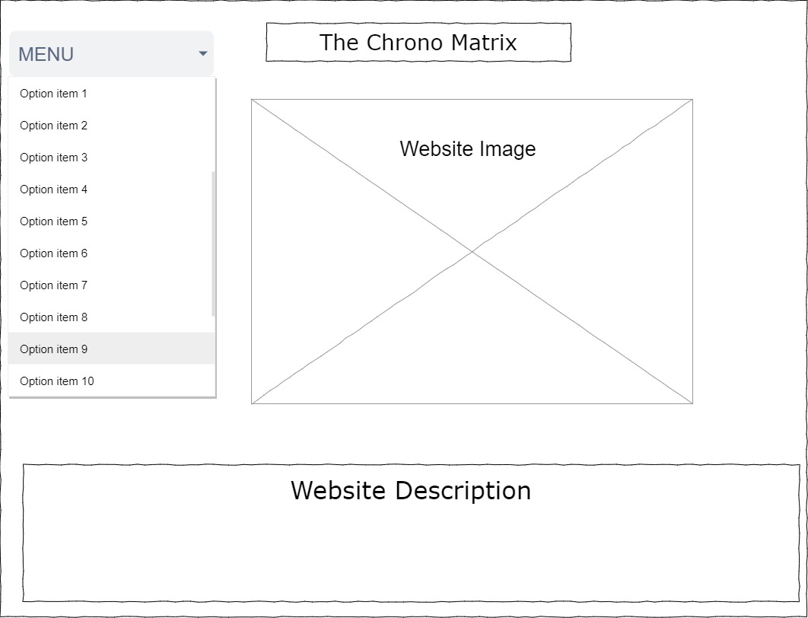

Welcome to the design section of the website. Here is where you will find all the design ideas and planning of the website.Each section will be broken down and explained through iterative design and the decisions through each
iteration.
WireFrame discussion:
The use of layers as shown in the wireframe, is the emphasis the theme of mystery in my Characters journal and my character in general, as you got through the website each layer starts opening and new information is revealed to the reader.
At the moment I am thinking about changing about changing the order of the layers from welcome section being the first layer, blogs being the second layer and museum being the final layer, more layers could be added time will tell.
I thik the change will make more sense for the theme that I am using for the site.
Since the Current iteration of the website does not have CSS, it does not look nice placing all of the layers on just the plain black and white background
and thus for now until CSS is implemented, the website will have a rather simple design illustrated below:

The new wireframe is basic and simple it has the website name on top, a website image( probably a logo for the website) and below it a short description of the website. On the left hand corner we have the menu bar,
when users click on the menu bar they will be presented with different options that will link them to new pages with the information corresponding to what they've click on, these include, contacts, blogs etc.
The website wireframe will change as CSS is implemented but for now I think this is suiting for what I have right now.
The though process behind the navigation in the website is to make sure that the user and still access all of the menu items even if they have accessed another one. The solution to this process was to implement
a navigation bar on the top of every page to give users the option to access other menu items if they say wish to, this limits the amount of times they have to go back to the home page and access the memu screem
just to access a different portion of the website. A back button has also been implemented on every page that will allow users to revist the last page they had access to before their current page.(More on this will be updated as progress on the website unfolds)